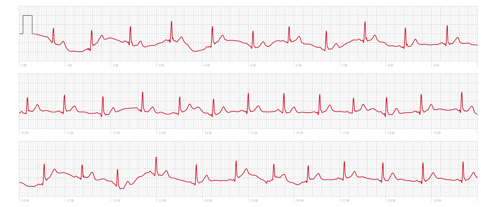

生活リズム、いろいろ
このリズム譜は作者のデバイスが自動的に取得していた様々な生活のデータから生成されました
レーンD（1列目）：外出
我が家のスマートロックの施錠/解錠履歴から、僕の外出・帰宅リズムを抽出しました。 コロナ禍の自粛期間中はリズム譜にできるほどの記録がとれなかったので今年夏以降のデータを利用しました。
レーンF（2列目）：食事
スマホに記録された起床や就寝の時間データなどを利用して，行動パターンから食事のリズムを推定しました。
レーンJ（3列目）：活動
スマートウォッチで取得した心拍数・消費エ ネルギー・環境音などを組み合わせ、僕の活動量を表現しました。この画像は消費エネルギーのデータです。
レーンK（4列目）：睡眠
スマホの睡眠解析アプリで取得した起床と就寝のリズムです。 ゲーム背景の動きと連動しているのに気がつきましたか？
サウンドは心電図を元に作成されました
